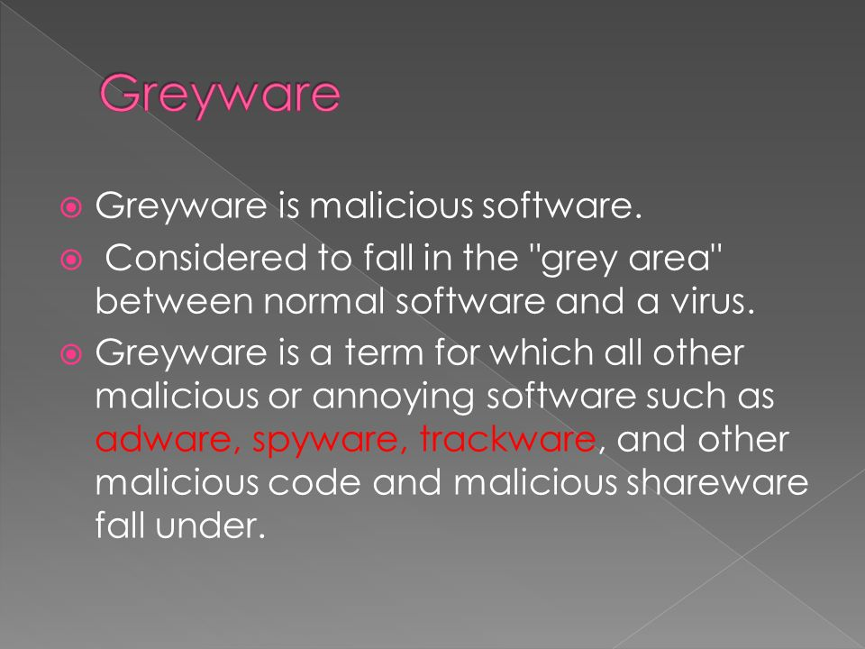

Grayware
Grayware is a term applied to unwanted applications or files that are not classified as malware, but can worsen the performance of computers and may cause security risks.[76]
It describes applications that behave in an annoying or undesirable manner, and yet are less serious or troublesome than malware. Grayware encompasses spyware, adware, fraudulent dialers, joke programs, remote access tools and other unwanted programs that may harm the performance of computers or cause inconvenience. The term came into use around 2004.[77]
Another term, potentially unwanted program (PUP) or potentially unwanted application (PUA),[78] refers to applications that would be considered unwanted despite often having been downloaded by the user, possibly after failing to read a download agreement. PUPs include spyware, adware, and fraudulent dialers. Many security products classify unauthorised key generators as grayware, although they frequently carry true malware in addition to their ostensible purpose.
Software maker Malwarebytes lists several criteria for classifying a program as a PUP.[79] Some types of adware (using stolen certificates) turn off anti-malware and virus protection; technical remedies are available.[44]
